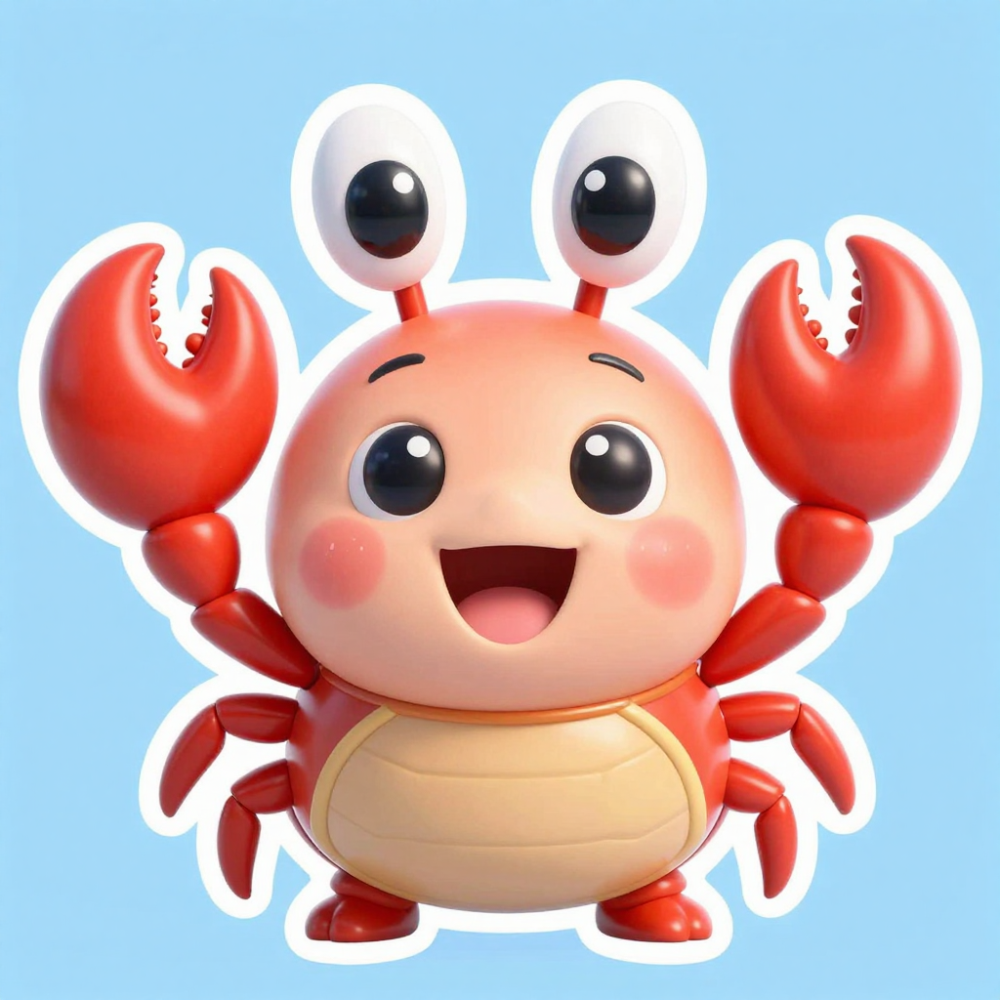
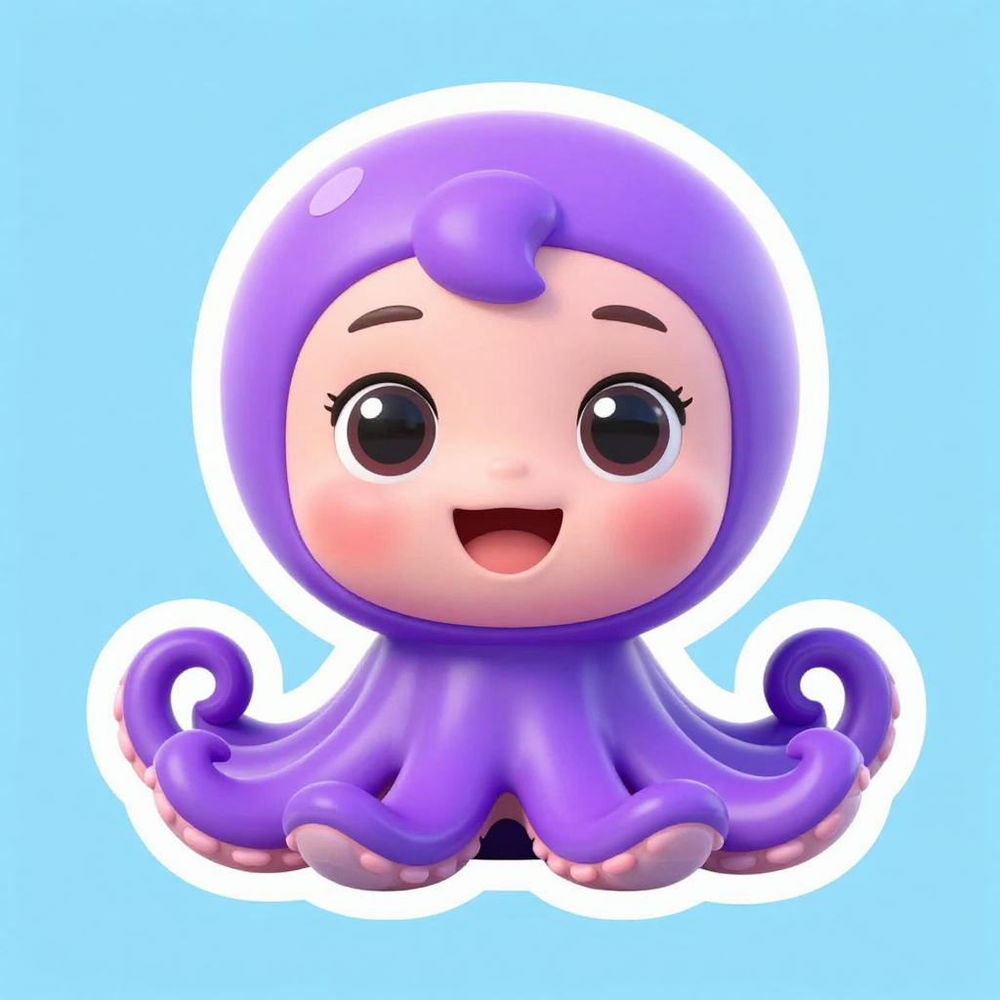

畫風選擇（參考你嘅 reference art）
以下全部係用你部機嘅 ComfyUI 即場生成，冇用任何外部收費 API。睇完話我知揀邊個（A／B／C／D／E），或者「A 但係要貼紙背景」咁樣混合都得。
要點：遊戲需要 137 張角色圖（35 動物 + 102 題目字詞）＋ 8 個地點背景。所以「角色 + 乾淨背景」嘅路線最實用 —— 可以自動剪影做影子、
亦可以貼落自己畫嘅場景。純「角色連場景」好靚，但每個地點就要另外生成背景，而且剪影會剪到背景一齊。
回覆方法：直接話「D」或者「E 但係要更似 reference 嘅藍色水下背景」就得。
A · Z-Image Turbo（角色＋場景）11–17 秒/張
同一個 prompt 直接出「角色＋水下背景＋泡泡＋水草」。最似你 reference 嘅整體感覺。
優點：快、靚、唔使另外做背景；出圖穩定。
缺點：剪影（影子）會連背景一齊，需要每個地點另外處理；角色比例較「人樣」。
B · FLUX.2 Klein（角色＋場景）22–32 秒/張
同 A 一樣但用 FLUX.2，立體感／膠質感更強，眼神更精緻。
優點：質感最靚、最「Pixar」。
缺點：慢一倍；同 A 一樣有剪影問題。
C · FLUX.2 + 你嘅 reference 圖（風格遷移）22 秒/張
直接攞你 `reference art` 入面嘅圖做參考，令風格最貼近你原本嗰套。
優點：風格最跟到 reference。
缺點：會「抄」參考圖嘅顏色同特徵（呢張八爪魚變咗橙色＋有鉗），要用多幾張參考圖或者後期調。
D · Z-Image「貼紙」版（角色＋乾淨背景）推薦11–17 秒/張
角色置中、乾淨淺色背景、有白色貼紙邊。可以一鍵剪影做影子，亦可以貼落任何場景。

蟹

八爪魚（同一風格，好一致）
優點：快、風格一致、剪影／貼圖最方便；背景可以自己畫（仲可以保留而家啲場景）。
缺點：要另外做地點背景（可以用返現有 SVG 場景，或者再生成 8 張）。
E · FLUX.2「貼紙」版（角色＋乾淨背景）22–32 秒/張
FLUX.2 嘅乾淨背景版，立體膠質感最強，冇白色貼紙邊（更易剪影）。
優點：質感最靚、背景最乾淨（剪影最容易）。
缺點：慢；137 張大約 70–90 分鐘。